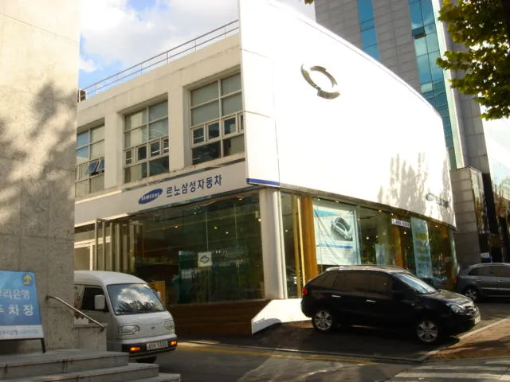
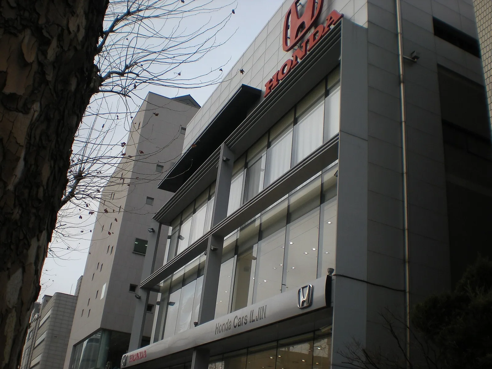
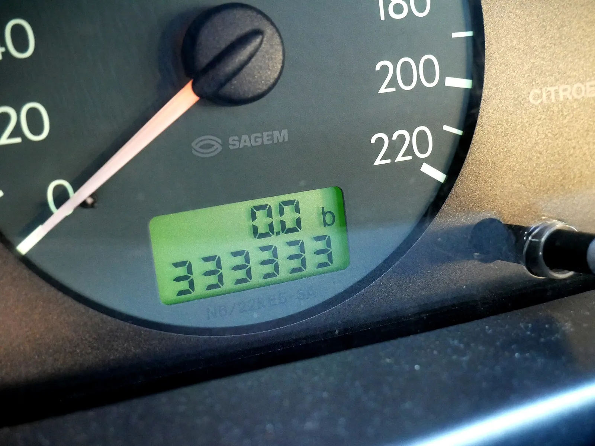
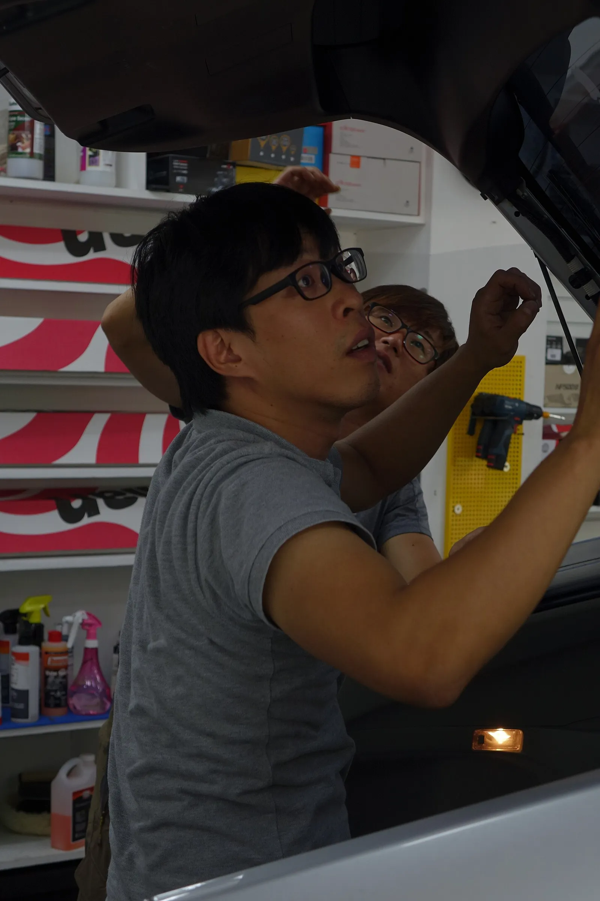
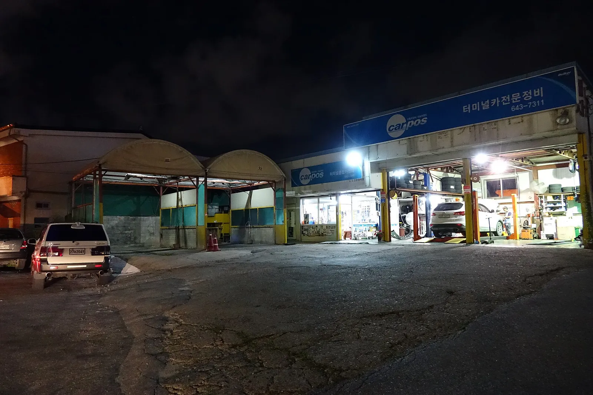
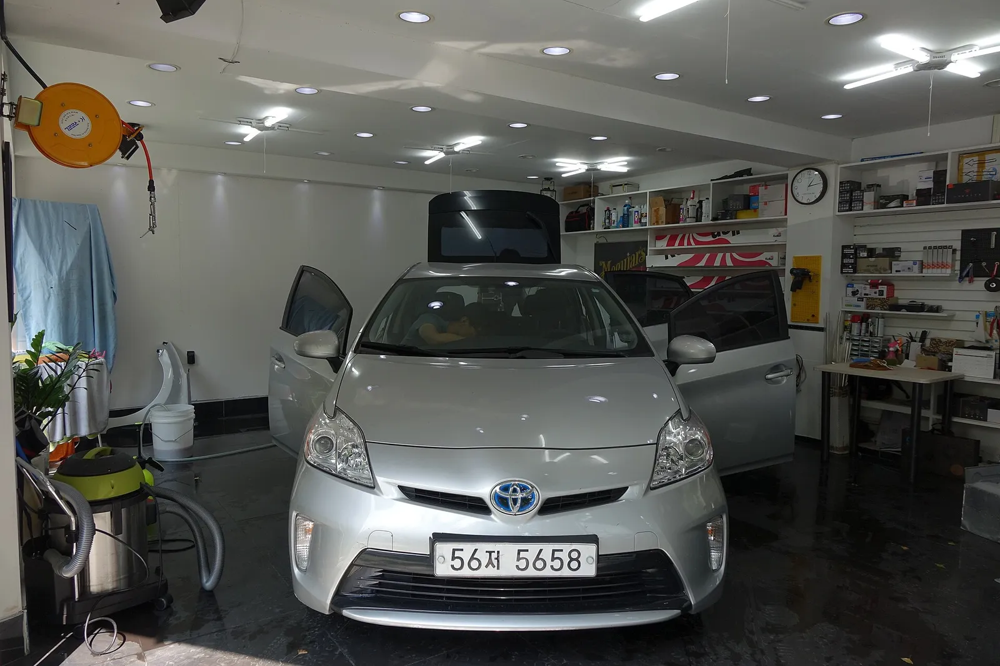
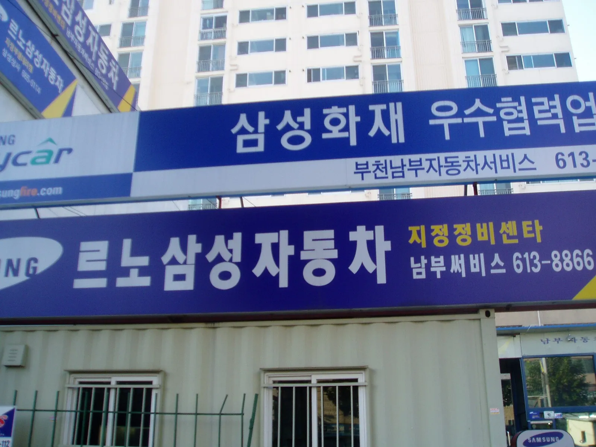
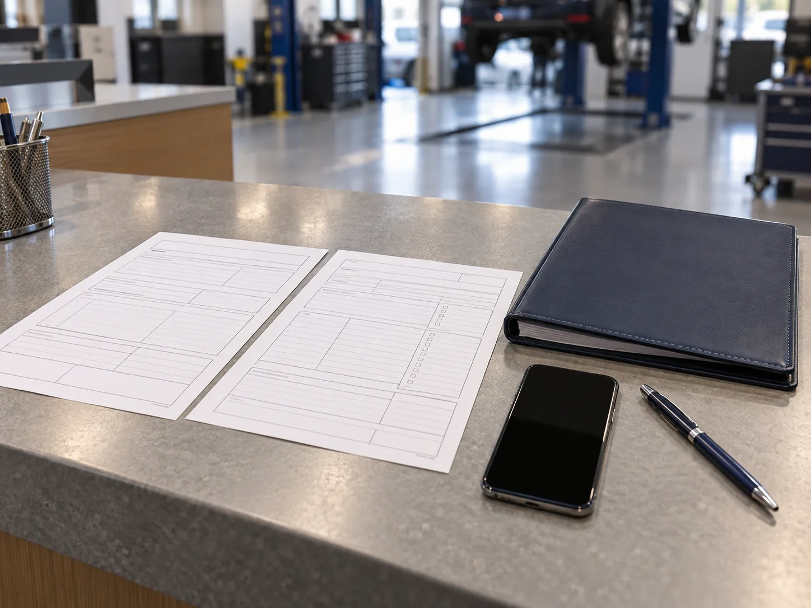
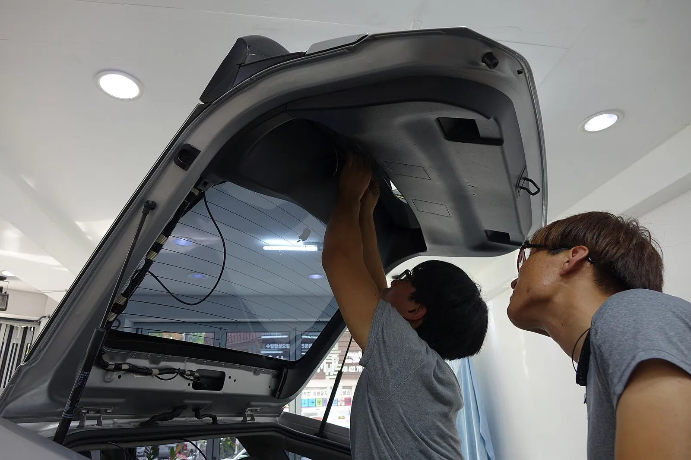

▲ 신차 계약서에 교환·환불 보장과 중재규정 안내가 있는지부터 확인해야 한다 ⓒ CEFICEFI / Wikimedia Commons (CC BY 3.0)
"출고한 지 몇 달 됐다고 또 같은 데서 문제가 생기는데, 한국에는 레몬법 없지 않나요?" 신차 하자를 겪은 운전자가 가장 먼저 하는 말이다. 결론부터 말하면 한국에도 이른바 '한국형 레몬법'이 있다. 2019년 1월 1일부터 시행된 자동차관리법상 교환·환불 중재 제도가 그것이다. 문제는 제도가 있느냐가 아니라, 요건을 맞추고 실제로 교환·환불 판정까지 가는 길이 얼마나 좁으냐다.
이 글은 개인 법률 자문이 아니라, 공공기관·제작사가 공개한 안내와 보도된 국회 자료를 카프리즘이 대조해 정리한 일반 정보다. 확인하지 못한 항목은 본문에 '확인 필요'로 표시했다.
1. 먼저 바로잡기 — 한국에 '레몬법'이 없다는 말은 틀렸다
미국의 레몬법(주별 소비자보호법)처럼 이름 붙은 단일 법률은 없지만, 한국도 자동차관리법에 교환·환불 요건과 중재 절차를 명문화했다. 국토교통부는 2018년 시행령·시행규칙 개정으로 이를 마련해 2019년 1월 1일부터 적용했고, 언론은 이를 '한국형 레몬법'이라 불러왔다.
▲ 신차 계약 시 서면 계약서에 교환·환불 보장과 중재규정 안내가 들어 있는지부터 확인해야 한다 ⓒ CEFICEFI / Wikimedia Commons (CC BY 3.0)
| 제도 | 근거·기관 | 성격 |
|---|---|---|
| 교환·환불 중재 | 자동차관리법 제47조의2 이하, 자동차안전·하자심의위원회 | 신차 교환·환불 전용, 판정은 확정판결과 같은 효력으로 안내됨 |
| 제작결함 리콜 | 자동차관리법 결함시정(리콜), 자동차리콜센터 | 안전 관련 결함을 제작사가 무상 시정 |
| 소비자분쟁해결기준 | 공정거래위원회 고시 | 분쟁 시 판단 기준(권고적 성격), 소비자원 상담·조정의 잣대 |
| 피해구제·분쟁조정 | 한국소비자원 | 합의 권고·조정, 당사자 수락이 필요 |
| 민사소송 | 민법 하자담보·채무불이행 등 | 최종 수단, 비용·기간 부담 |
📍 개정 추진 현황은 어디까지 확인됐나
2022년 말 국토교통부는 중재 전 조정 절차 도입, 대리 신청 허용, 자가진단 시스템(신차 교환·환불 e만족) 구축 등을 발표했다(국토교통부 정책뉴스·노컷뉴스). 이후 확인된 것은 두 가지다. 첫째, 인도 후 1년 이내 발견된 하자는 인도 때부터 있던 것으로 추정하도록 하자 추정기간을 6개월에서 1년으로 늘리는 자동차관리법 개정안이 2024년 1월 25일 국회를 통과했다는 보도가 있다(부산일보). 둘째, 2026년 9월 28일 보도(데일리환경)까지도 제도는 여전히 중재 중심으로 설명된다. 다만 중재 전 조정절차 도입 법안이 국회를 통과했는지는 국회 의안정보시스템·법제처 원문으로 확인하지 못했다. 확인 필요. 하자 추정기간 개정의 정확한 시행일도 확인하지 못했다.

▲ 인도 시점 서류와 계약서는 판매 전시장에서 받는다. 교환·환불 보장 문구는 인도 전에 확인하자 ⓒ CEFICEFI / Wikimedia Commons (CC BY-SA 3.0)
2. 요건 계산 — 1년·2만km, 그리고 '수리 횟수'를 세는 법
중재 신청 요건은 크게 ① 2019.1.1 이후 판매된 신차(교환·환불 보장 서면 계약) ② 인도 후 1년·2만km 이내 ③ 하자 유형별 수리 횟수다. 제작사 공식 안내(현대·제네시스)에 따른 요건은 아래와 같다.
| 하자 유형 | 수리 횟수 조건 | 공통 조건 |
|---|---|---|
| 중대한 하자(원동기·동력전달장치·조향장치·제동장치 등 안전·가치·사용 곤란) | 같은 증상을 2회 이상 수리했으나 재발 | 인도 후 1년 이내, 주행 2만km 이내 |
| 일반 하자(위 외 부위) | 같은 증상을 3회 이상 수리했으나 재발, 또는 1회 이상 수리하고 누적 수리기간 30일 초과(생활법령·제작사 안내) | 동일 |
여기서 놓치기 쉬운 두 가지가 있다. 첫째, 리콜과 무상 점검은 수리 횟수에 넣지 않는다고 안내된다. 둘째, 소비자가 이미 알고 맡긴 증상의 수리·점검은 횟수에 들어간다. 따라서 같은 증상으로 정비소를 몇 번 갔는지, 그때마다 '수리'로 기록됐는지가 승패를 가른다.
"2회 수리 후 재발"이라는 표현은 헷갈리기 쉽다. 현대·제네시스·기아 공식 안내의 단계를 따라가 보면 중대 하자는 같은 증상이 3번째로 나타날 때, 일반 하자는 4번째로 나타날 때 신청 요건이 채워진다. 소비자분쟁해결기준(2016.10 개정 보도)의 '2회 수리 후 재발(3회째)'과도 같은 셈법이다.
| 단계 | 중대한 하자 | 일반 하자 |
|---|---|---|
| 보증수리 단계 | 1회 수리 | 2회 수리 |
| 재발 통보·접수 | 같은 증상이 재발하면 제작사에 서면 통보(시행규칙 별지 제62호의2 서식 안내) | 동일 |
| 추가 수리 | 서비스 네트워크에서 추가 수리(누적 2회째) | 추가 수리(누적 3회째) |
| 다시 재발 | 3번째 증상 발생 시 중재 신청 가능 | 4번째 증상 발생 시 중재 신청 가능 |
▲ 증상이 나타난 순간의 계기판과 경고등을 영상으로 남겨두면 수리 횟수 다툼을 줄일 수 있다(설명용 AI 생성 이미지, 실제 고장 사례 아님) ⓒ CarPrism (AI 생성 이미지)
| 월 주행거리 | 2만km 도달 | 먼저 닿는 조건 | 계산식 |
|---|---|---|---|
| 1,000km | 20개월 | 1년(12개월) | 20,000 ÷ 1,000 |
| 1,667km | 12개월 | 1년과 동시 | 20,000 ÷ 12 |
| 2,000km | 10개월 | 2만km | 20,000 ÷ 2,000 |
| 3,000km | 약 6.7개월 | 2만km | 20,000 ÷ 3,000 |
※ 단순 산술이며 실제 판단은 하자 발생 시점의 인도일·주행거리 기준이다. 장거리 출퇴근자는 1년보다 2만km 조건에 먼저 닿는다는 뜻이다.

▲ 주행거리 2만km는 신청 요건의 한 축이다. 증상이 나타난 날의 계기판을 사진으로 남겨두자(설명용 예시 계기판) ⓒ Santeri Viinamäki / Wikimedia Commons (CC BY-SA 4.0)
✅ 요건을 세는 4가지 습관
· 증상이 처음 나타난 날, 정비소 입고일·출고일, 입고 시 주행거리를 날짜별로 메모
· 입고증·작업지시서에 증상 문구가 소비자가 말한 그대로 적혔는지 확인(다른 표현이면 같은 증상으로 안 셀 수 있음)
· 정비소가 "이상 없음"으로 돌려보내면 그 입고 기록도 반드시 보관
· 재발 직후 수리를 맡기지 말고 제작사에 서면 통보 여부부터 확인
3. 절차 순서표 — 증거부터 소송까지
한 번에 모든 기관에 신청하는 방식이 아니라, 증거 → 제작사 → 공적 절차 → 소송 순으로 단계를 밟는 것이 일반적이다. 아래는 공개된 안내를 카프리즘이 순서대로 정리한 것이다.
| 단계 | 할 일 | 기관·창구 | 핵심 포인트 |
|---|---|---|---|
| 1. 증거 확보 | 증상 사진·영상, 입고증, 작업지시서, 주행거리 기록 | 본인·정비소 | 증상이 재현되는 영상, 같은 증상 문구가 적힌 수리 이력이 핵심 |
| 2. 제작사 서면 접수 | 같은 증상 재발 시 제작사에 정해진 서식으로 서면 통보 | 제작사 고객센터·서비스센터 | 구두 요청보다 서면·이메일·접수번호 기록이 유리 |
| 3. 제작결함 신고(병행) | 안전 관련이면 결함 신고 | 자동차리콜센터 080-357-2500, car.go.kr | 리콜 판정은 별도 절차, 교환·환불과 대체 관계 아님 |
| 4. 소비자원 상담·피해구제 | 상담 후 피해구제·분쟁조정 신청 | 한국소비자원 | 소비자분쟁해결기준이 판단 잣대, 조정은 당사자 수락 필요 |
| 5. 교환·환불 중재 신청 | 요건 충족 시 중재 신청 | 자동차안전·하자심의위원회, KATRI 온라인 중재 | 판정은 확정판결과 같은 효력으로 안내되어 신중하게 선택 |
| 6. 소송 | 민사소송 또는 지급명령 등 | 법원 | 비용·기간 부담, 변호사 상담 권장 |
📍 4번과 5번, 어느 쪽이 먼저일까
공개 자료만으로는 소비자원 조정과 중재의 선후·중복 가능 여부를 단정할 수 없다. 중재 판정이 확정판결과 같은 효력을 갖는다는 안내가 있으므로, 어느 경로를 택할지는 소비자원 상담 또는 변호사 상담으로 확인 필요하다.
그렇다면 신청부터 결론까지는 얼마나 걸릴까. 아래 표는 확인된 기간만 모은 것이다. 접수 후 평균이 이미 4개월 안팎이라, 신청 시점이 1년 한계에 가까우면 처리 도중 기간이 넘어갈 수 있다는 걱정이 들 수 있다. 다만 요건 판단 기준 시점이 신청일인지 하자 재발일인지는 이번에 확인하지 못했으므로, 한계가 임박했다면 신청 전 공단·소비자원에 확인하는 것이 안전하다.
| 구간 | 기간·기준 | 근거·비고 |
|---|---|---|
| 신청 가능 창 | 인도 후 1년·2만km 이내 | 제작사·생활법령 안내 |
| 하자 추정 | 인도일부터 1년 이내 발견된 하자는 인도 때부터 있던 것으로 추정(기존 6개월) | 2024.1.25 국회 통과 보도, 시행일 확인 못 함 |
| 일반 하자 누적 수리 | 30일 초과 시 횟수와 별개로 요건 충족 가능 | 생활법령·제작사 안내 |
| 법정 조사기간 | 45일 | 데일리환경 보도 인용, 조문 원문은 직접 확인 못 함 |
| 실제 평균 처리기간 | 2023년 67일 → 2025년 126일 → 2026년 116일 | 유상범 의원실 자료 보도 |
| 처리기간 환산(계산) | 126일 ≈ 4.1개월, 116일 ≈ 3.8개월 | 일수 ÷ 30.4일(월 평균), 126÷30.4=4.14 |
▲ 신청 전 자가진단이나 상담 창구에서 요건 충족 여부를 먼저 확인해 두면 헛걸음을 줄일 수 있다(설명용 AI 생성 이미지) ⓒ CarPrism (AI 생성 이미지)

▲ 수리 때마다 입고증에 증상과 날짜가 남아야 재발 횟수를 증명할 수 있다 ⓒ 최광모 / Wikimedia Commons (CC0)
4. 현실 점검 — 접수 4,132건, 공식 판정 87건
제도가 있다고 해서 실제 교환·환불로 이어지는 것은 아니다. 보도된 국회 국토교통위원회 유상범 의원실 자료에 따르면 2019년 1월~2026년 7월 접수는 4,132건, 이 중 공식 교환·환불 판정은 87건(2.2%)이었다(2026.9.28 보도). 구제 사례의 94.0%는 위원회 판정이 아니라 제작사·소비자 합의로 종결됐다고 한다.
| 항목 | 수치 | 계산·비고 |
|---|---|---|
| 접수 건수(2019.1~2026.7) | 4,132건 | 보도 기준 |
| 공식 교환·환불 판정 | 87건 | 87 ÷ 4,132 ≈ 2.1%, 87 ÷ 처리 완료 3,951 ≈ 2.2%(보도 수치와 일치, 교환 35·환불 52) |
| 합의 등으로 종결 | 구제 건수의 94.0% | 구제 1,626건 − 판정·화해 97건 = 1,529건, 1,529 ÷ 1,626 ≈ 94.0% |
| 평균 처리 기간 | 2023년 67일 → 2025년 126일 | 126 ÷ 67 ≈ 1.9배(약 88% 증가) |
| 법정 조사 기간 대비 | 126일 vs 45일 | 126 ÷ 45 ≈ 2.8배(45일은 보도에서 '법정 조사기간'으로 인용, 조문 원문은 직접 확인 못 함) |
| 전문기관 사실조사 의뢰 | 7년 7개월간 3건 | 2020.4 이후 0건이라고 보도 |
연도별 접수는 제도 초기 2019년 79건, 2020년 668건, 2021년 707건(국토교통부 정책뉴스)으로 늘었다. 2022년 말 기준 한국교통안전공단 자료는 누적 1,871건 접수, 교환 113건·환불 125건·보상 또는 수리 352건, 최종 중재 판정 10건 안팎이었다(노컷뉴스 보도). 보도마다 집계 방식과 분모가 달라 수치를 직접 비교하기 어렵다는 점은 감안해야 한다. '구제율 41.2%'와 '판정 87건'·'97건'이 엇갈려 보이는 이유는 분모와 포함 범위가 달라서다(아래 분해 표 참고). 이번에 보도 원문 기준으로 재대조했으나 국토교통부 원자료는 직접 열람하지 못했다.
구제율 41.2%는 합의 종결이 대부분을 차지하는 수치라, 위원회가 실제로 교환·환불을 명령한 비율과는 의미가 다르다.
| 항목 | 건수·비율 | 계산·비고 |
|---|---|---|
| 접수 | 4,132건 | 보도 기준 |
| 처리 완료 | 3,951건(접수의 95.6%) | 3,951 ÷ 4,132, 나머지 181건은 처리 중 등으로 추정 |
| 위원회 교환·환불 판정 | 87건(교환 35·환불 52) | 87 ÷ 3,951 ≈ 2.2% |
| 판정 + 화해 | 97건 | 화해 등 10건은 97 − 87로 역산, 97 ÷ 3,951 ≈ 2.5% |
| 제작사·소비자 합의 종결 | 1,529건 | 1,626 − 97, 구제 건수의 94.0% |
| 구제 합계 | 1,626건 | 97 + 1,529 |
| 구제율 41.2% | 1,626 ÷ 3,951 ≈ 41.15% | 분모를 접수 4,132로 잡으면 약 39.4% |
접수는 어떻게 변해 왔을까. 확인된 연도별 수치와 이를 이용한 산출은 다음과 같다. 1,871건의 집계 시점·방식이 4,132건과 다를 수 있어 산출값은 추정치다.
| 시점 | 접수 건수 | 출처·계산 |
|---|---|---|
| 2019년(시행 첫해) | 79건 | 국토교통부 정책뉴스 |
| 2020년 | 668건 | 국토교통부 정책뉴스 |
| 2021년 | 707건 | 국토교통부 정책뉴스 |
| ~2022년 11월 누적 | 1,871건 | 한국교통안전공단 자료(노컷뉴스 보도) |
| 2022년 1~11월(산출) | 약 417건(월 약 38건) | 1,871 − (79+668+707) = 417, 417 ÷ 11 ≈ 37.9 |
| 2019.1~2026.7 누적 | 4,132건 | 데일리환경 보도(유상범 의원실 자료) |
| 2022.12~2026.7(산출) | 약 2,261건(월 약 51건) | 4,132 − 1,871 = 2,261, 44개월, 2,261 ÷ 44 ≈ 51.4 |
| 참고: 2020~21년 월평균 | 약 57건 | (668+707) ÷ 24 ≈ 57.3 |

▲ 수리 이력은 정비소가 쓰는 입고증·작업지시서에 남는다. 증상 문구가 같게 적혔는지 확인해야 한다 ⓒ 최광모 / Wikimedia Commons (CC0)
✅ 통계에서 읽어야 할 현실적 교훈
· 판정까지 가기 전에 합의 협상이 사실상 주된 해결 경로이므로 증거 확보가 협상력
· 신청이 접수돼도 요건 미충족으로 개시되지 못하는 경우가 많다는 보도가 있으니 신청 전 자가진단 활용
· 전문기관 현장조사가 거의 없다고 지적되므로 소비자가 제출한 영상·기록이 서류심의의 핵심 자료
5. 한국소비자원 경로 — 소비자분쟁해결기준
중재 요건(1년·2만km·2회/3회)에 못 미칠 때 참고되는 것이 공정거래위원회 소비자분쟁해결기준이다. 2016년 10월 26일 시행 개정 기준 보도에 따르면 자동차는 차량 인도일로부터 12개월 이내에 중대 결함이 2회 수리 후 재발(3회째)하거나, 일반 결함이 3회 수리 후 재발(4회째)하거나, 일반 결함 누적 수리기간이 30일을 초과하면 교환·환급이 가능하도록 했다.
| 항목 | 자동차관리법 중재 | 소비자분쟁해결기준(2016.10 개정 보도) |
|---|---|---|
| 기간 조건 | 인도 후 1년 + 주행 2만km | 인도 후 12개월(주행거리 조건은 확인 필요) |
| 중대 하자 | 2회 수리 후 재발 | 2회 수리 후 재발(3회째) |
| 일반 하자 | 3회 수리 후 재발 또는 누적 30일 초과 | 3회 수리 후 재발(4회째) 또는 누적 30일 초과 |
| 효력 | 판정이 확정판결과 같은 효력으로 안내 | 권고적 성격(일반 원칙), 합의·조정에 활용 |
| 기관 | 자동차안전·하자심의위원회 | 한국소비자원 상담·피해구제·분쟁조정 |
※ 소비자분쟁해결기준 현행 고시 원문과의 대조는 이번에도 하지 못했고, 2016.10 개정 보도(이투데이)로만 재확인했다. 자동차 항목은 이후 개정됐을 수 있으므로 공정거래위원회·소비자원 최신 고시 확인 필요.

▲ 소비자원 상담 때도 어느 정비소에서 언제 무엇을 했는지 기록이 가장 먼저 요구된다 ⓒ 최광모 / Wikimedia Commons (CC0)
📍 법원 판례·소송은 단정하지 않는다
신차 하자로 매매대금 환불을 인정한 판례의 구체적 사건과 요건은 법원 종합법률정보로 직접 확인하지 못했다. 확인 필요. 소송은 하자 입증책임, 제작사·판매사 중 상대방 선택 등이 쟁점이 될 수 있어 개인이 단독으로 판단하기 어렵다.
6. 제작결함 신고와 리콜 — 교환·환불과 어떻게 다른가
안전과 직결된 증상이라면 자동차리콜센터(www.car.go.kr, 080-357-2500)에 결함을 신고할 수 있다. 신고 내용을 분석해 결함조사에 착수하는 구조이며, 제작사가 결함을 시정하는 것이 목적이지 소비자 개인의 교환·환불을 결정하는 절차는 아니다. 자세한 확인 방법은 내 차 리콜 조회 가이드, 무상수리와의 차이는 리콜과 무상수리 차이에서 볼 수 있다.
| 상황 | 먼저 할 일 | 기대할 수 있는 결과 |
|---|---|---|
| 같은 증상이 반복되고 1년·2만km 이내 | 제작사 서면 통보 후 중재 신청 검토 | 합의·보상·교환·환불 |
| 동종 차량 다수에서 안전 결함 의심 | 리콜센터 결함 신고 | 조사 후 리콜(무상 시정) |
| 요건 미달, 수리비·위자료 분쟁 | 소비자원 상담·피해구제 | 합의·조정 |
| 협상 결렬, 손해 큼 | 변호사 상담 후 소송 | 판결 |
신차 계약을 취소하려는 단계라면 신차 계약 취소 위약금 브랜드별 비교를, 중고차 하자로 고민한다면 중고차 7일 환불제 정리와 침수차 점검 체크리스트를 함께 읽어두자. 중고차는 이 신차 중재 제도 대상이 아니다.

▲ 지정 서비스센터 입고증도 중재 신청 때 수리 횟수를 입증하는 서류가 된다 ⓒ Jang Woo Lee / Wikimedia Commons (CC BY 3.0)
7. 필요 서류 체크리스트와 제작사 자체 프로그램
✅ 신청 전 준비 서류 체크리스트(일반 목록)
· 신차 판매계약서(교환·환불 보장·중재규정 안내 포함 여부)
· 자동차등록증, 인도일 확인 자료
· 정비 입고증·작업지시서·정비명세서(날짜·증상·주행거리)
· 증상 사진·영상, 계기판 주행거리 사진
· 제작사 서면 통보서와 접수 확인(이메일·문자 포함)
· 구매대금·취득세·할부(대출) 관련 서류
· 제작사·정비소와 주고받은 메시지·통화 기록
※ 공식 신청서 양식·첨부 서류는 KATRI 중재 신청 페이지에서 확인 필요

▲ 입고증·작업지시서는 받을 때마다 사진으로도 남겨두면 서류가 빠지는 일을 막을 수 있다(설명용 AI 생성 이미지) ⓒ CarPrism (AI 생성 이미지)

▲ 증상 부위를 정비사 앞에서 직접 보여주고, 재현 영상을 남기면 입증에 도움이 된다 ⓒ 최광모 / Wikimedia Commons (CC0)
제작사 자체 교환·환불 프로그램은 어떨까. 현대자동차·제네시스·기아 공식 사이트에는 법정 중재 규정 안내가 올라와 있고, 중재 신청은 KATRI 온라인 시스템으로 연결된다. 아래 표는 공식 페이지를 직접 열어 확인된 것만 담았다.
| 제조사 | 확인된 안내 | 문의처·비고 |
|---|---|---|
| 현대자동차 | 교환·환불 중재 규정 안내: 2019.1.1 이후 판매 신차, 인도 후 1년·2만km, 중대 2회·일반 3회 재발 또는 누적 30일 초과, 재발 통보 후 KATRI 온라인 중재 신청, 리콜·무상수리는 횟수 제외 | 고객센터 080-600-6000(페이지 표기) |
| 제네시스 | 8단계 절차 안내(계약 시 중재규정 수락 → 보증수리 → 재발 통보 → 추가 수리 → 중재), 소비자가 미리 알고 맡긴 결함은 횟수에 포함 | 제네시스 공식 안내 페이지 |
| 기아 | 7단계 절차와 동일 요건(2019.1.1 이후 신차, 1년·2만km, 중대 2회·일반 3회, 누적 30일 초과 포함) | 고객센터 080-200-2000(평일 08:30~18:00) |
| BMW·벤츠 등 수입차 | 이번 조사에서 공식 안내 페이지를 직접 확인하지 못함 | 확인 필요, 계약서의 중재규정 문구로 확인 |
중재와 별개로 상시 운영되는 구매 보장 프로그램은 확인됐다. 다만 현대차 어드밴티지는 사고·마음 변심 대상이지 제작 하자 교환 제도가 아니고 제네시스·전기차는 제외되므로, 하자 분쟁에서는 위 중재 규정이 기준이다. 법정 중재와 별도로 하자를 이유로 한 상시 교환·환불 프로그램은 이번 조사에서 공식 자료로 확인하지 못했다. 개별 프로모션은 계약서·공식 공지로 직접 확인해야 한다.
| 항목 | 공식 안내 내용 |
|---|---|
| 신차교환 | 출고 후 1년 이내 차대차 사고, 수리비가 원 차량가격의 30% 이상, 본인 과실 50% 미만 |
| 차종교환 | 출고 후 30일 이내, 주행 3,000km 이내, 수리비 30만원 미만 |
| 제외 대상 | 제네시스, 전기차, 수소전기차, 소형상용 포함 상용차, 사업자등록 고객 |
| 적용 기간 | 2026.1.1~12.31 |
보증 기간 자체가 궁금하다면 현대·기아 보증 승계 기준과 수입차 4개 브랜드 보증 프로모션을, 수리비·보상 협상이 얽힌다면 합의금 협상 가이드를 함께 보자.
8. 요약
한국에도 '한국형 레몬법'이 있다. 2019.1.1 이후 판매된 신차가 인도 후 1년·2만km 이내에 중대 하자 2회, 일반 하자 3회(또는 1회 이상 수리 후 누적 30일 초과) 수리 후에도 재발하면 자동차안전·하자심의위원회에 교환·환불 중재를 신청할 수 있다.
다만 접수 4,132건 대비 공식 판정은 87건(처리 완료 3,951건 기준 2.2%)이고 구제율 41.2%도 대부분 합의 종결이라는 보도처럼, 실제 구제는 대부분 합의로 이뤄지고 처리 기간도 길어지는 추세다. 증거(영상·입고증·주행거리)와 서면 통보 이력이 협상력의 핵심이다.
중재 외에 자동차리콜센터 결함 신고, 소비자원 상담·분쟁조정, 소송이 있으며 각각 목적과 효력이 다르다. 이 글은 일반 정보이며 개인 법률 자문이 아니다. 구체적 사건은 한국소비자원이나 변호사 상담을 통해 확인하자. 조정절차 도입 법안의 통과 여부, 판례, 소비자분쟁해결기준 현행 고시 원문, BMW·벤츠 등 수입차의 공식 안내는 확인 필요로 남긴다.